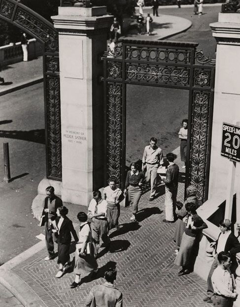
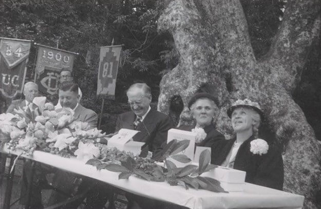

1931-1950
1931-1950

The Great Depression impacted Extension’s ability to maintain its educational offerings, nevertheless, new structural changes allowed for the creation of new resources for professional career development. While other universities across the country spun out their Extensions to become independent colleges with their own standards, faculty and programs, UC held on to its original design of an integrated Extension. As a consequence, control of the Academic Senate grew and to ensure the continuing ability to deliver university credit bearing courses, while providing professional training, Extension offerings were divided into three categories: degree credit, professional upgrading, and noncredit offerings.

During World War II, Extension classes and correspondence courses became an important way for service personnel to continue their education. As part of the war effort, Extension’s Director Professor Baldwin Munger Woods took over the Engineering Science Management Defense Training (ESMDT) Program. By the end of the war, hundreds of thousands of research dollars poured into California, spawn ing new industries and, once again, dramatically increasing the population. UCLA Extension met the critical need for retraining mandated by Southern California's burgeoning aerospace industry, while UC Berkeley Extension expanded its business and engineering courses across the state. Growth also meant an increased demand for teachers. Extension responded by developing an emergency teacher training program that enabled new teachers to satisfy the state's credential requirements. With the new UC Santa Barbara campus, a new Extension began offering classes in 1944. All the while, important new programs were developed and implemented. Continuing Education of the Bar (CEB), for example, was established in 1947 by the Regents of the University and the State Bar of California. Today it is one of the country's largest continuing education programs for lawyers.
